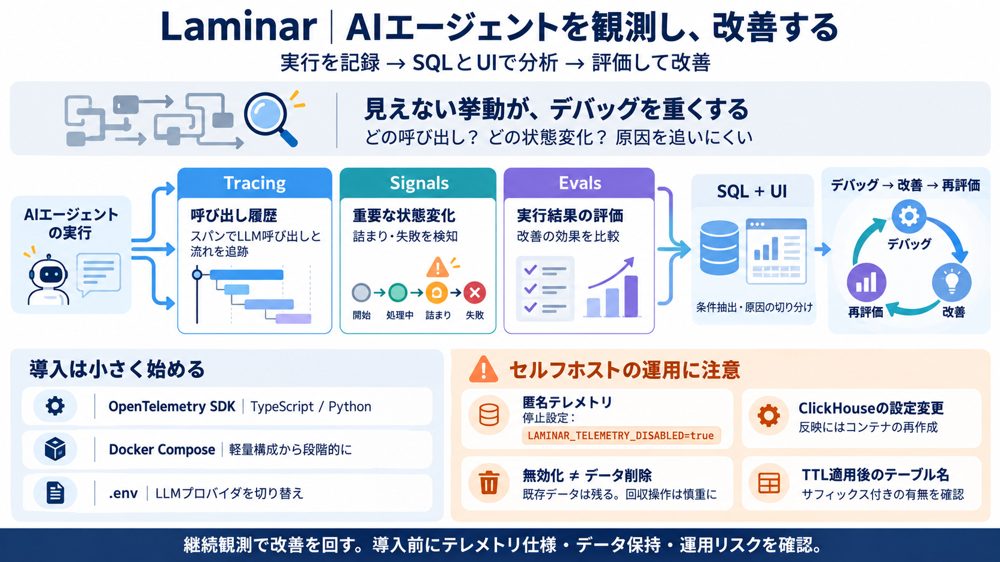

Laminar | Airframe
Free preview · You have 9 of 10 free product views left after this one. Sign up for freeLog in Laminar # Laminar AI …

LLMやAIエージェントの実行を、トレース・Signals・evalsとして集め、SQLとUIで改善につなげます。
AIエージェントは「どのLLM呼び出しで詰まったか」「どの状態変化が原因か」を追いにくいことが多いです。結果として、失敗の再現や改善の優先度付けが遅れます。
Laminarは「呼び出し履歴（トレース）」「重要な状態変化（Signals）」「評価（evals）」を分けて記録します。単一ログより、原因究明と改善の道筋が立てやすくなります。
収集したトレース・イベントを、SQLで問い合わせる設計です。UIでの確認だけでなく、条件抽出して要因を切り分けられます。
運用はDocker Composeを前提に段階的な構成選択ができます。まずは軽量スタックで動かし、必要に応じて本番向けへ寄せる流れです。
Gemini / OpenAI互換 / AWS Bedrock / Azure AI Foundry を想定し、.envで切替します。AIプロジェクトの変更（モデル・ベンダー）に追従しやすい前提です。
機能紹介に留まらず、セルフホストで詰まりやすい具体論（再作成・ディスク回収・TTL）まで扱います。導入後の“安定稼働”に寄与します。
TTL適用によりテーブルがサフィックス付きでリネームされる可能性があります。削除・回収操作は、サフィックス付きテーブルの有無を確認してから行うのが安全です。
要点：Laminarは「AIエージェントの実行を継続観測し、デバッグ・改善・評価を回す」ための基盤です。ただし導入判断は、テレメトリの実仕様とデータ保持・運用リスクを追加調査して確定してください。
Free preview · You have 9 of 10 free product views left after this one. Sign up for freeLog in Laminar # Laminar AI …
+ Written in Rust 🦀 + 20x trace compression for efficient ingestion and storage. Read more about it here. + Custom r…
### Pricing# Data-volume pricing with no seat fees and no per-span unit counting. Free: 1GB/month, 7-day retention. Hob…
Robert and his co-founder Din Mailibay started Laminar in 2024, joining Y Combinator’s Summer 2024 cohort. At its core, …
Backed by Y Combinator (S24) and processing traces from thousands of AI agents in production, Laminar is the open-source…